vamo, vamo, vamo…
Ana Amélia
Procuro na corrida, uma forma de melhorar minhas condições físicas e superar meus limites, mas ainda sobra muita preguiça pra treinar.
Posts by Ana Amélia

Ex- sedentarios na Maratona Internacional de Assunção- Paraguai
86 years
by Ana Amélia
in Ex-sedentário
O Blog fez 2 anos, viva !!!!!!!
E para comemorar este novo ano do blog, eis um relato internacional:
Eu, a Ana Shibata e Claúdio Dundes partimos rumo a Assunção para começar uma nova etapa em nossas vidas de corredores: participamos da nossa primeira corrida internacional e com muito estilo!!!
Acompanhem nossa aventura!
Dia 5 de Agosto:
As 9h20 pegamos o vôo para o Paraguai com a companhia do grupo de corrida Baleias, já mencionado algumas vezes pelo Alecão e pelo Cláudio.
O pessoal √© super simpático e descontra√≠do…fizemos uma farra, sorte que a aeromo√ßa era boazinha…rsrsrs
  
     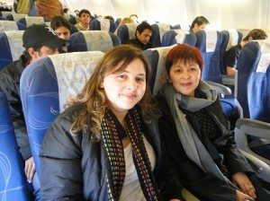
  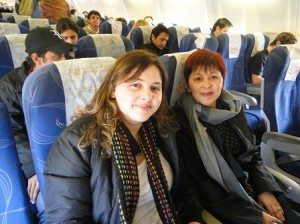
Chegamos as 11h35 no Aeroporto de Assunção e lá mesmo tiramos fotos e conhecemos o resto do pessoal que nos acompanharia pelos próximos dias.
  
    
 

A organização da corrida disponibilizou uma van para nos levar ao Hotel Chaco, lugar confortável, barato, com funcionários super atenciosos e perto de tudo!
Feito o check-in, deixamos as malas e os casacos (achamos que ia estar frio, mas chegando lá estava 30ºC) e fomos retirar os kits na Expo Maratona que ficava na antiga ferroviária de Assunção. O kit era composto pela camiseta, um boné da Adidas, alguns chaveiros e como parte da inscrição ainda tínhamos um seguro de vida, que após a conferência de dados nos dava uma toalhinha com um elástico para prender no pulso!
Passeamos pela feira, experimentamos o Powerade de Maçã, a famosa CHIPA que é um pão de queijo com um toque de erva doce e deixamos nossa marca lá em Asunción.
 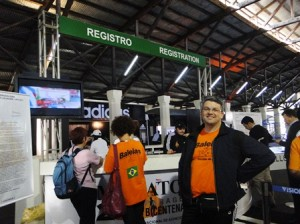
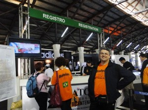  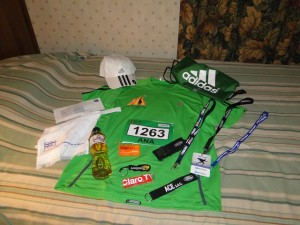  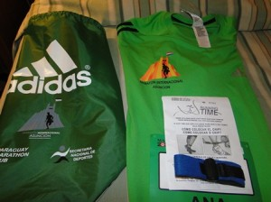 
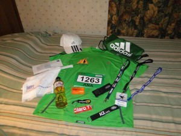  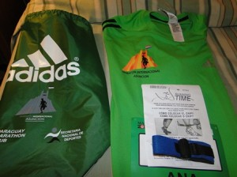  
Por volta das 18h30 assitimos ao show de uma banda que tocava rock e animou a galera.
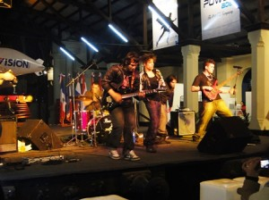  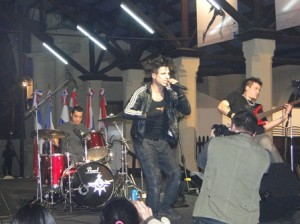
A noite jantamos no El Bolsi, um restaurante super bonitinho, com uma comida muito boa e que apesar de ter dado 1.634.000,00 era super em conta.
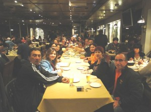  
  
  
  
  
 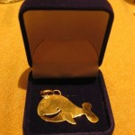
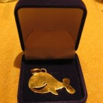
Detalhe:
a Myrtha, organizadora da maratona, foi jantar conosco e ganhou um mimo dos Baleias, um pingente de ouro, entregue pelo Wu!!!
Após o jantar maravilhoso, eu estava super cansada e não via a hora de dormir. Seguimos de volta ao Hotel.
 Dia 6 de Agosto:
No sábado, acordamos cedo (Ana Shibata e eu), tomamos caf√© e fomos explorar a cidade. Paramos em um outlet da Adidas e fizemos algumas comprinhas…rsrsrsrs almo√ßamos e nos econtramos com o grupo Baleias para fazer um tour nos pontos hist√≥ricos da cidade.
*** Por um infeliz desastre, perdemos as fotos de sábado, e eu s√≥ tirei essas 2 com a minha máquina üôÅ
Museu da Indepedência e a Catedral Metropolitana de Assunção
   
   
Andamos muuuito e pra ajudar, tava um sol de rachar a “moringa”. Fomos at√© o palácio de Los Lopez e de lá voltamos ao hotel, porque estava imposs√≠vel de andar pela cidade sem água e com o sol forte.
De noite voltamos à ferroviária e participamos do jantar de massas e encerramento da feira, com direito a muita música paraguaia!
Fui logo dormir porque estava com dores nas pernas da andança pela cidade.
Dia 7 de Agosto:
DOMINGO!
Finalmente o dia tão esperado!!!
Nervosismo, ansiedade, felicidade e alegria eram os sentimentos pairando no ar!
Levava uns 7 minutos do hotel at√© a largada. Chegando lá tiramos mais fotos com a turma de cetáceos…kkk e logo fomos para a largada. Quase chorei de emo√ß√£o!
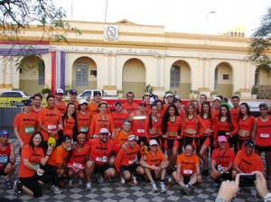  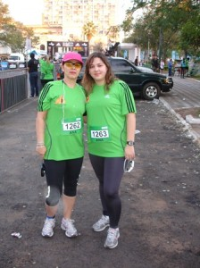
Ah nem comentei o mais importante: o presidente Fernando Lugo estava presente no ínicio da corrida, dei uma de paparazzi e tirei uma fotinho enquanto ele andava..hehehe

Após o discurso do presidente e a seqüência de fogos, deu-se a largada e partimos rumo aos 10k. No começo o clima estava ameno, os moradores ficavam na calçada torcendo por nós, uma imensidão de pessoas de verde e alguns de laranja, tomavam conta das ruas de Assunção. Em Asunción eles não fecham a rua como aqui no Brasil, lá os guardinhas ficam controlando o fluxo e o pessoal respeita muito os pedestres, tanto é que vi no máximo uns 5 semáforos em toda a cidade.
Uma hora depois da corrida sentia-se um calor muito grande, ao passar por um termômetro eletrônico, marcava 29º. Terminei a prova com 1h34, não fui tão bem como esperava e andei uma grande parte do percurso, devido à falta de treino.
Cheguei a tempo de tirar foto da minha querida mãe atravessando o portal e logo fomos pegar nosso isotônico ( se aqui em São Paulo estamos acostumados com 1, lá eles te davam 3), pegamos uma sacolinha que continha Bananas, maçã ou mexerica, um suco e uma barrinha de cereal muito saborosa. Encontramos um cantinho e sentamos pra respirar! A Drª Ana estava extasiada!!!!
  
  
Foi uma alegria ter completado a prova e como eu mencionei no dia: senti que tinha cumprido meu dever.


Depois de descansar um pouco, ficamos na arquibancada torcendo por nossos companheiros!


 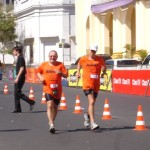
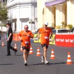 
 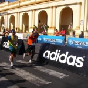
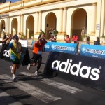 


 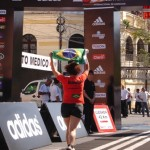
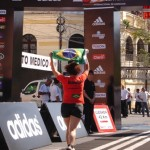 

Se Deus quiser ano que vem estaremos de volta a Asunción, mas eu pretendo correr a meia maratona!
Será que consigo? Vou tomar vergonha na cara e começar a treinar para ano que vem fazer bonito na frente dos Baleias que conquistaram 4 troféus!
Espero também que a turma do Ex Sendentários esteja completa dessa vez!
Por último, mas não menos importante, gostaria de agradecer aos Baleias que nos acompanharam nesta maravilhosa viagem!!!
Que venham mais corridas e junto, mais posts!!!
***Especial***
 Abaixo vocês conferem a nossa homenagem ao Henrique, filho do Cláudio, que nos emprestou o Leãozinho que fez sucesso entre os paraguaios e paraguaias!!!
La Fuerza do Leonzito!!!!!!


 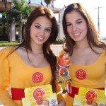
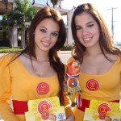 
Beijão üòÄ
Melinha
Estréia Dupla РBlog e 10K
117 years
by Ana Amélia
in Ex-sedentário
Hoje estou estreando aqui no blog, finalmente \o/ !
E para começar com o pé direito, vim falar da minha estréia nos 10k.
Comecei no mundo das corridas no meio do ano passado, na corrida feminina WRUN- 5km que acontece em Junho. Desde então participei de outras corridas de rua, mas nunca fiz treinos para poder melhorar o desempenho.
No m√™s de Fevereiro vi que as inscri√ß√µes do Circuito das Esta√ß√µes estavam abertas, como sou aficcionada pela Adidas logo me inscrevi, por√©m a prova √© de 10k. Perguntei se o Igor (meu namorado) se arriscaria a correr comigo, ele disse que sim, então pensei: ” Vai ser mais tranquilo, pois ele vai me acompanhar e assim os quil√¥metros ficam menores”.
Desde de Dezembro não corro, e achei que esta corrida me daria √¢nimo para treinar, mas os dias se passaram e nada! Para não dizer que não dei uma corridinha, fui no Elevado Costa e Silva (famoso “Minhocão”) uma semana antes e ainda assim debaixo de um sol de rachar (Vide o post do dia 16 de Mar√ßo da Ana Shibata)
Semana passada, o Igor disse que ia trabalhar no fim de semana e não poderia correr comigo, no máximo acompanhar a largada. Fiquei aflita, hahaha, pensei: “onde √© que eu fui me meter? 10k? Eu sou uma louca mesma”. Quis desistir, mas enfrentei o medo e fui correr.
Cheguei no Pacaembu, onde ocorreria a largada, peguei meu chip e fiquei aguardando a corrida começar. O frio na barriga foi inevitável. Eu olhava para as pessoas e me imaginava a última daquela multidão, atravessando a linha de chegada sozinha.
Oito horas deu-se a largada, fui no trotinho até o povo se espalhar, corri aproximadamente 1k e meio, e o resto foi divido entre trotes, caminhadas e corridinhas.
Quando cheguei no Minhocão estava cansada, aos 4km fiz a volta e fui feliz sabendo que eu aguentaria o resto da corrida numa boa, pois anda tinha muito pique pra continuar.
Por fim, atravessei o portal com 01:31:15, vibrei ainda mais quando vi que o tempo líquido foi de 01:27:53, por mais que sejam só 3 minutos de diferença, pra mim é ótimo, pois faço em média 45min./5km, ou seja, mesmo sem correr por 2 meses, eu ainda consigo ir bem nas corridas.
Os 10K me deram medo, mas me fizeram relembrar o motivo pelo qual comecei a correr, a satisfação de estar ouvindo sua música favorita e correr de todos os problemas que te perseguem, o bem estar e depois de tudo chegar em casa com a sensação de missão comprida, isso não tem preço e é por isso que gosto.
Agora a empolagação é tanta que estou planejando o meu treino de amanhã no e levado, pois sábado a Corrida de Paranapiacaba nos aguarda!


Ana Am√©lia üòÄ
.jpg "DSC01829 (1024x576)")
.jpg "DSC01856 (1024x576)")
.jpg "DSC01887 (1024x576)")


{kind=link}
{kind=link}
√öltimos comentários